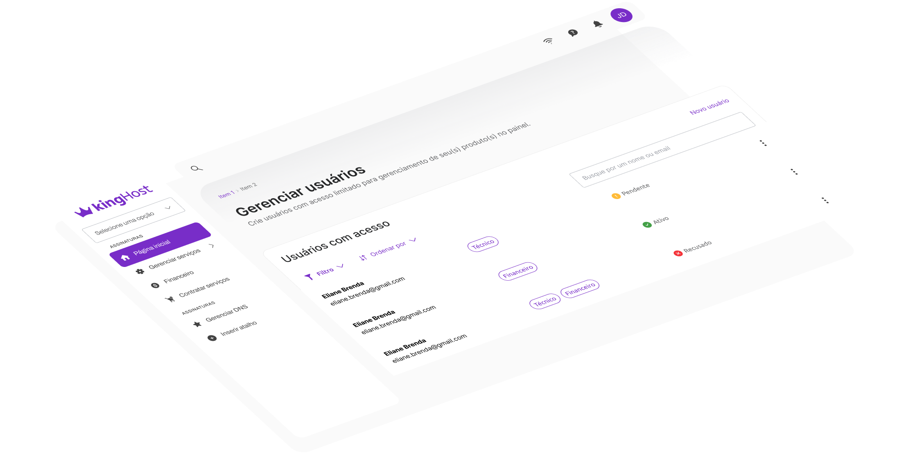

Locaweb Design System
Empresa
Locaweb
Atuação
Product designer
Empresa
Locaweb
Atuação
Product designer
A estrutura do design system da Locaweb nasceu por meio de uma framework open-source chamada Vuetify, para agilizar o seu processo de construção. Contudo, isso acarretou em componentes e design tokens pouco escaláveis e confusos de entender, considerando também a falta de uma documentação.
O meu papel ao longo desse projeto foi de trazer escalabilidade para o design system, avaliando os elementos que precisavam ser melhorados, de forma que os resultados trouxessem maior eficiência de uso pelos designers e desenvolvedores.
A primeira análise consistiu em catalogar cada design token e entender qual o caso de uso que eles tinham no design system. Além disso, utilizando o analytics do Figma, pude observar o número de inserções dos estilos, variáveis e componentes do arquivo, além da quantidade de detaches.
Avaliando o uso das cores, reparei que em todas as paletas, pelo menos um dos tons nunca era utilizado, e pela falta de documentação, não havia uma indicação verdadeira de como e quando utilizar cada uma, considerando que apenas com exceção a paleta de cores neutras, todas as outras eram apenas usadas para microinterações nos componentes, mas sem nomenclaturas que indicassem isso. Além disso, também percebi que alguns tons usados como background para textos em componentes não contrastavam bem, seguindo as diretrizes da WCAG.
A responsividade do sistema de escalas tipográficas não era bem executado. Em vez de trabalhar com medidas relativas (como rem ou em), como é o convencional, e reduzir o valor conforme o breakpoint, os textos apenas reduziam o tamanho para uma escala abaixo, ou seja, se em desktop tinhamos textos de 40, 32 e 24 pixels, em mobile o texto que usava 40 atualizava para 32 pixels, e o 32 para 24 pixels, e assim por diante.
Essa redução ocasionava tanto em textos demasiadamente grandes em dispositivos móveis, como também nas duas últimas escalas com o mesmo tamanho, já que a última não possuia um valor menor para atualizar.
Nomenclaturas sem padrão
Os tokens de cor não possuíam padrão de nomenclatura, considerando que a escala de cinza era definida diferente das outras paletas.
Baixo contraste
A falta de uma adaptação principalmente nas cores do meio de cada paleta traziam falhas quando inseridas sobre um fundo escuro.

Componentes sem atributos acessíveis
Accordions, alerts, modais e outros componentes não possuíam atributos ARIA para auxiliar tecnologias assistivas.
Escala tipográfica pouco responsiva
Os design tokens não eram organizados e nem mesmo escaláveis, sem uma separação do que é primitivo ou semântico.
Entretanto, o maior problema que notei com relação a tipografia era o seu uso prático. No próprio design system, alguns títulos eram compostos por tamanhos diferentes, e os produtos não possuíam padrão entre si. Isso se devia pela nomenclatura nada clara (font-size-xl, lg, md...) e por não ter nenhuma indicação do que seria um h1, h2 e outras tags.
Por fim, o design system também fornecia as mesmas escalas para as duas fontes da marca, Ubuntu (principal) e Open Sans (secundária), mas a última raramente era usada nos projetos, considerando que até mesmo alguns designers nem sabiam da existência dela.
Para a segunda análise, preparei um roteiro e realizei uma entrevista individual com cada um dos designers que já vinham utilizando o design system nos seus produtos, com o objetivo de entender as percepções de cada um sobre o uso dos tokens.
A pesquisa comprovou alguns dos dados que eu já havia coletado na primeira análise, mas também me trouxe novos resultados:
Pouco uso da cor secundária
Os designers não utilizavam a cor secundária em nenhuma ocasião na interface dos seus produtos, e como não havia documentação, não sabiam dizer para que essa paleta servia.
Dificuldades em entender as hierarquias tipográficas
Os designers tinham entendimentos diferentes sobre quando utilizar a maioria das escalas tipográficas. Haviam diferentes definições do que seria o título da página, subtítulo, e até mesmo uma chamada de seção.
Inutilização do peso "light"
O arquivo fornecia o peso “light” para cada uma das oito escalas, e mesmo que com pouquíssimas inserções vistas no analytics, todos os designers afirmaram nunca usar e nem saber o seu caso de uso.
Incerteza sobre o uso das escalas de cinza nos textos
Pela falta de padronização e recomendação, os designers tinham diferentes entendimentos entre si sobre o uso das escalas de cinza em textos, de forma a colaborar na hierarquia de títulos e parágrafos.
A terceira e última análise envolveu uma comparação direta entre Figma e código de todos os design tokens e componentes.
Esse levantamento foi feito primeiramente sozinho, para ter inicialmente as minhas próprias visões, mas no final decidi me reunir com o responsável pelo desenvolvimento front-end do design system, tanto para ter a oportunidade de coletar mais informações como já passar para ele os pontos que coletei.
Componentes com nomes diferentes
Apesar dos designers e desenvolvedores usarem os mesmos componentes, alguns deles não compartilhavam o mesmo nome, como era o caso do Dialog para os designers, e Modal para os desenvolvedores.
Escalas tipográficas com nomes distintos
Enquanto os designers reconheciam as escalas por uma determinada nomenclatura no Figma, a nomenclatura do design token usada na prática pelos desenvolvedores eram outras.
Diferenças nas elevações em design e código
O arquivo do design system no Figma fornecia alguns níveis de elevação (estilos de sombra), que eram completamente diferentes dos tokens, tanto em nomenclatura quanto em valor.
A solução do projeto contém informações confidenciais. Para continuar lendo, é necessário informar a senha correta no campo a seguir.
Não possui a senha? Entre em contato comigo pelo LinkedIn ou pelo e-mail contato@mateusvillain.com.